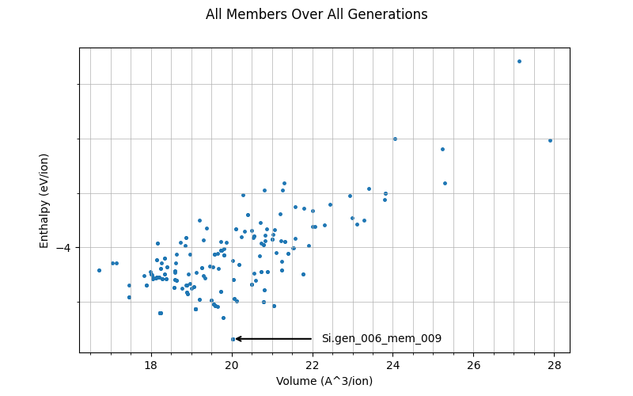
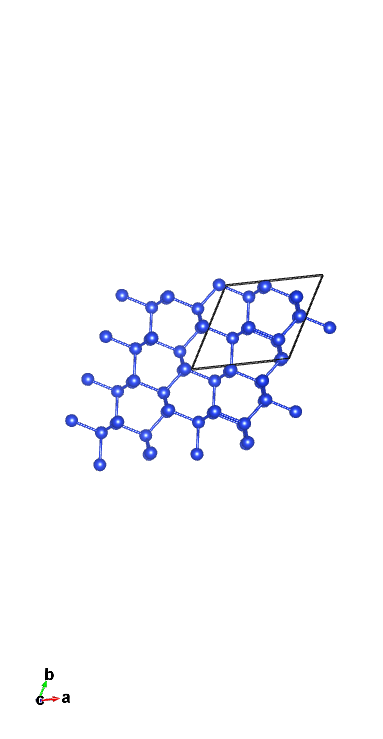
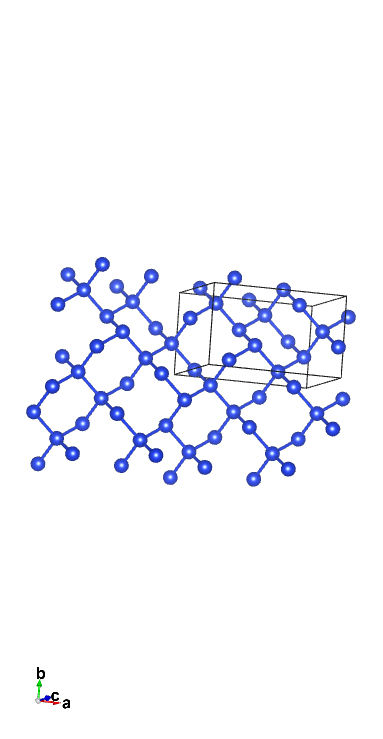

硅的CASTEP GA计算
让我们假设我们不知道Stillinger-Weber硅的基态结构，于是使用CASTEP的遗传算法来发现它。
输入文件
我们将使用 cell 文件 Si.cell
%block LATTICE_ABC
ang
3.8 3.8 3.8
90 90 90
%endblock LATTICE_ABC
%block POSITIONS_FRAC
Si 0.203 0.617 0.209
Si 0.844 0.442 0.350
Si 0.964 0.379 0.096
Si 0.762 0.524 0.941
Si 0.544 0.605 0.781
Si 0.238 0.597 0.531
Si 0.728 0.914 0.742
Si 0.209 0.929 0.435
%endblock POSITIONS_FRAC
%BLOCK SPECIES_POT
QC5
%ENDBLOCK SPECIES_POT
symmetry_generate
symmetry_tol : 0.05 ang
晶格的定义以及原子位置对最终结果影响不大：在 0那 生成时会变得有效随机化。唯一重要的是在其中定义的硅原子数量。 POSITIONS_FRAC 块 - 这里是 8，因此未来的结构也将有 8 个原子。另一个值得注意的是使用了 QC5 势能函数 - 它被选用是因为其速度，这一点在需要进行大量计算的情况下尤为重要。
对于 param 文件我们将使用 Si.param
task = genetic algor # Run the GA
ga_pop_size = 12 # Parent population size
ga_max_gens = 12 # Max number of generations to run for
ga_mutate_amp = 1.00 # Mutation amplitude (in Angstrom)
ga_mutate_rate = 0.15 # Probability of mutation to occur
ga_fixed_N = true # Fix number of ions in each member based on input cell
rand_seed = 101213 # Random seed for replicability
opt_strategy = SPEED # Run quick
geom_max_iter = 211 # Can have a large max iter as using pair potentials
# Don't write most output files for each population member
write_checkpoint = NONE
write_bib = FALSE
write_cst_esp = FALSE
write_bands = FALSE
write_cell_structure = TRUE
######################################
# Any extra devel code options #
# & required GA specific devel flags #
######################################
%block devel_code
# Command used to call castep for each population member
# If not given this defaults to castep.serial
CMD: castep.serial :ENDCMD
GA:
PP=T # Using a pair potential
IPM=M # Randomly mutated initial population
CW=24 # Num gens for convergence
NI=F # No niching
FW=0.5 # Fitness weighting
# Asynchronous running options
# Required for asynchronous running, without this all geom opts will be run
# one after another
AS=T # Run geometry optimisations asynchronously
MS=3 # Run 3 geometry optimisations at once
# Random symmetry children
NUM_CHILDREN=12
RSC=F
CORE_RADII_LAMBDA=0.8 # Core radii 0.8 pseudopotenital radii
SCALE_IGNORE_CONV=T # Ignore convergence in fitness calcualtion
:ENDGA
# Use pair potentials in geometry optimisations and perform a final snap to symmetry
GEOM: PP=T SNAP=T :ENDGEOM
# Use the Stillinger-Weber pair potential
PP=T
PP:
SW=T
:ENDPP
%endblock devel_code
了解这个文件中发生了什么非常重要。这一行 task = genetic algor 这是告诉我们要实际运行GA。GA参数决定了GA如何运行——与前一个教程（添加链接）不同，这些值都是合理的（大多数情况下，突变幅度和速率不应偏离这些数值）。如你所见，每一代将有12个父代个体（意味着会选出12个单元格进行繁殖），并且将运行12代。 ga_fixed_N 正是这一点确保了单元格中存在固定的8个离子（信息越固定，结果收敛得越快，因为需要尝试的变量就越少）。
存在许多加速遗传算法的选项——由于正在进行的计算数量，这一点至关重要，以确保其可行性。 op_strategy = SPEED 并且 geom_max_iter = 211 请确保几何结构优化（每代有12次，因此本次首次运行共144次）既快速又具有合理的准确性。 AS=T 并且 MS=3 允许异步并行化，其中3个种群成员将同时进行几何优化。
该 devel_code 块稍微复杂一些。事实是，所使用的对势被定义在两者中都存在。 GA 子块和 GEOM 子块，再次对速度是必要的。The CMD 子块的存在是为了对所有成员执行几何结构优化：其发生的情况是 cell 文件被生成（最初是随机的，并在 1st 从生成开始通过育种+突变)，以及相应的 param 包含告诉它们进行几何优化的文件，针对每个成员，然后进行运行。
一个非常重要的事情需要注意的是这些线条
这种情况非常不寻常，大多数实际计算中都不会使用：它通常会呈现如下形式：
根据一般规则 NUM_CHILREN + RSN = ga_pop_size （此前已定义）。它所做的事是，在每一代中，随机生成一个高对称性结构作为子代（其余11个， NUM_CHILDREN，即被培育）。这里没有使用这一方法的原因是：硅是一个非常简单的例子；它很可能会随机猜测其结构为金刚石，这意味着实际的遗传算法（GA）作用微乎其微，最终结果也缺乏趣味性。
说明
尽管并非保证，使用相同的 RAND_SEED 使其很可能你将得到与本教程完全相同的结果，因此可以更轻松地跟随操作。
运行与输出
现在我们可以对硅（Si）运行CASTEP的遗传算法（GA）。你可以使用
tail -f Si.castep
如果你想查看其中发生了什么情况 castep 文件在运行时生成（更详细的说明见前一个教程 ADD LINK）。运行完成后，我们将使用脚本 get_data.sh 并且 plot_results.py - 第一次运行
./get_data.sh
以获取输出文件 out.put. 运行 Python 脚本以在视觉上查看数据 all_gens.png图应如下所示

图中的每个点代表一个成员，显示了其每离子体积与焓之间的关系。该图中最低焓的成员（在第6代、成员9）被突出标出——目前认为这是所发现最稳定的结构。
你也可以通过运行来找到最低焓结构
grep 'child' Si.castep | sort -k10,10n | head -20
这给出了焓最低的10个成员（每个成员重复两次——不必担心这一点）。输出看起来有点像
GA: gen # 6 child # 9 enthalpy = -4.336393E+000 eV/atom un-scaled fitness = 0.880797 conv = T member error = F seed = Si.gen_006_mem_009 vol/ion = 20.0224 A**3/atom
GA: gen # 6 child # 9 enthalpy = -4.336393E+000 eV/atom updated fitness = 0.880797 conv = T member error = F seed = Si.gen_006_mem_009 vol/ion = 20.0224 A**3/atom
GA: gen # 12 child # 8 enthalpy = -4.336381E+000 eV/atom un-scaled fitness = 0.880788 conv = T member error = F seed = Si.gen_012_mem_008 vol/ion = 20.0241 A**3/atom
GA: gen # 12 child # 8 enthalpy = -4.336381E+000 eV/atom updated fitness = 0.452993 conv = T member error = F seed = Si.gen_012_mem_008 vol/ion = 20.0241 A**3/atom
GA: gen # 5 child # 9 enthalpy = -4.336369E+000 eV/atom un-scaled fitness = 0.880797 conv = T member error = F seed = Si.gen_005_mem_009 vol/ion = 20.0230 A**3/atom
GA: gen # 5 child # 9 enthalpy = -4.336369E+000 eV/atom updated fitness = 0.880797 conv = T member error = F seed = Si.gen_005_mem_009 vol/ion = 20.0230 A**3/atom
GA: gen # 11 child # 6 enthalpy = -4.258665E+000 eV/atom un-scaled fitness = 0.828518 conv = T member error = F seed = Si.gen_011_mem_006 vol/ion = 19.7822 A**3/atom
GA: gen # 11 child # 6 enthalpy = -4.258665E+000 eV/atom updated fitness = 0.456619 conv = T member error = F seed = Si.gen_011_mem_006 vol/ion = 19.7822 A**3/atom
GA: gen # 4 child # 10 enthalpy = -4.241488E+000 eV/atom un-scaled fitness = 0.880797 conv = T member error = F seed = Si.gen_004_mem_010 vol/ion = 18.2369 A**3/atom
GA: gen # 4 child # 10 enthalpy = -4.241488E+000 eV/atom updated fitness = 0.880797 conv = T member error = F seed = Si.gen_004_mem_010 vol/ion = 18.2369 A**3/atom
GA: gen # 1 child # 8 enthalpy = -4.240423E+000 eV/atom un-scaled fitness = 0.880797 conv = T member error = F seed = Si.gen_001_mem_008 vol/ion = 18.2175 A**3/atom
GA: gen # 1 child # 8 enthalpy = -4.240423E+000 eV/atom updated fitness = 0.880797 conv = T member error = F seed = Si.gen_001_mem_008 vol/ion = 18.2175 A**3/atom
GA: gen # 9 child # 3 enthalpy = -4.240415E+000 eV/atom un-scaled fitness = 0.835359 conv = T member error = F seed = Si.gen_009_mem_003 vol/ion = 18.2164 A**3/atom
GA: gen # 9 child # 3 enthalpy = -4.240415E+000 eV/atom updated fitness = 0.432991 conv = T member error = F seed = Si.gen_009_mem_003 vol/ion = 18.2164 A**3/atom
GA: gen # 9 child # 5 enthalpy = -4.240388E+000 eV/atom un-scaled fitness = 0.835345 conv = T member error = F seed = Si.gen_009_mem_005 vol/ion = 18.2140 A**3/atom
GA: gen # 9 child # 5 enthalpy = -4.240388E+000 eV/atom updated fitness = 0.432963 conv = T member error = F seed = Si.gen_009_mem_005 vol/ion = 18.2140 A**3/atom
GA: gen # 11 child # 10 enthalpy = -4.225493E+000 eV/atom un-scaled fitness = 0.801207 conv = T member error = F seed = Si.gen_011_mem_010 vol/ion = 19.0956 A**3/atom
GA: gen # 11 child # 10 enthalpy = -4.225493E+000 eV/atom updated fitness = 0.420408 conv = T member error = F seed = Si.gen_011_mem_010 vol/ion = 19.0956 A**3/atom
GA: gen # 1 child # 9 enthalpy = -4.225480E+000 eV/atom un-scaled fitness = 0.865596 conv = T member error = F seed = Si.gen_001_mem_009 vol/ion = 19.0992 A**3/atom
GA: gen # 1 child # 9 enthalpy = -4.225480E+000 eV/atom updated fitness = 0.444351 conv = T member error = F seed = Si.gen_001_mem_009 vol/ion = 19.0992 A**3/atom
通过它运行c2x
c2x --int -e=0.1-0.0001 Si.gen_006_mem_009
它告诉我们其对结构的近似情况。在我的情况下，它给出了输出
从这一点我们可以立即判断结果不完美：实际结构应为金刚石结构（Fd-3m）。不过不必担心，因为在VESTA中查看一个2×2超胞时，可以明显看到其与我们预期的结构相似：
这很有希望——尽管它一开始生成的是随机结构，但已经得到了类似金刚石的结构。
让我们看看更多的代数是否能改善结果。修改初始 param 需要的文件
ga_max_gens = 18
并且添加该行
continuation = Si.xyz
这会告诉它继续运行，最多进行18代迭代，使用之前的结果作为其历史记录。再次运行castep GA对Si的计算将使其按以前的方式运行。
运行完成后，如果希望保存之前的图表，只需将其重命名即可。然后再次运行bash脚本和python脚本，以获取新的图表。 all_gens.png 用于持续、长时间的运行。新图像将在图上具有更多的数据点，因为已考察了更多的成员，并（希望）发现了具有更低焓值的新成员。运行相同的 grep 命令将在此顶部4处给出
GA: gen # 16 child # 7 enthalpy = -4.336404E+000 eV/atom un-scaled fitness = 0.880797 conv = T member error = F seed = Si.gen_016_mem_007 vol/ion = 20.0237 A**3/atom
GA: gen # 16 child # 7 enthalpy = -4.336404E+000 eV/atom updated fitness = 0.880797 conv = T member error = F seed = Si.gen_016_mem_007 vol/ion = 20.0237 A**3/atom
GA: gen # 6 child # 9 enthalpy = -4.336393E+000 eV/atom un-scaled fitness = 0.880797 conv = T member error = F seed = Si.gen_006_mem_009 vol/ion = 20.0224 A**3/atom
GA: gen # 6 child # 9 enthalpy = -4.336393E+000 eV/atom updated fitness = 0.880797 conv = T member error = F seed = Si.gen_006_mem_009 vol/ion = 20.0224 A**3/atom
这相当有趣：即使在生成了 6 × 12 = 72 个新成员之后，原来的最小值仍然是 2并 最低焓值：它确实是一个良好的结构。然而，目前16,7被认为是最好的：我们来看看它的改进之处。
在它上面运行c2x告诉我这一点
根据c2x来看，它现在更接近金刚石结构（尽管如果你非常严格地看，它仍然不是——它依然存在缺陷，但已经更接近了）。在VESTA中查看（再次是2x2超胞）也告诉我们类似的情况。
正如GA预期的那样，它已经通过多代演化成功优化了结构。如果需要，您可以通过保留当前设置继续运行更多代。 continuation 线性并增加 ga_max_gens 更多——事实上，如果使用不同的种子值，或者你的环境对所述种子值处理方式不同，你可能需要——额外6代并不保证能发现一个新的最低焓结构！